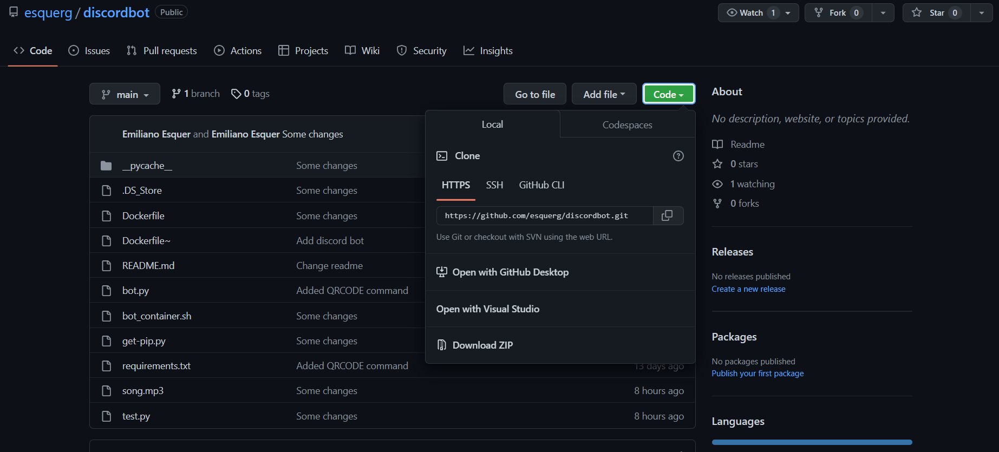
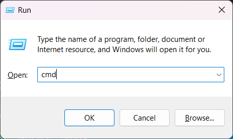
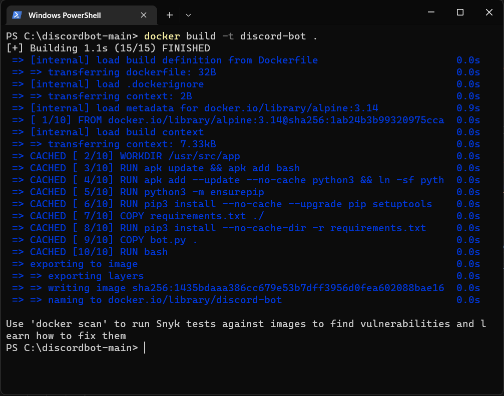
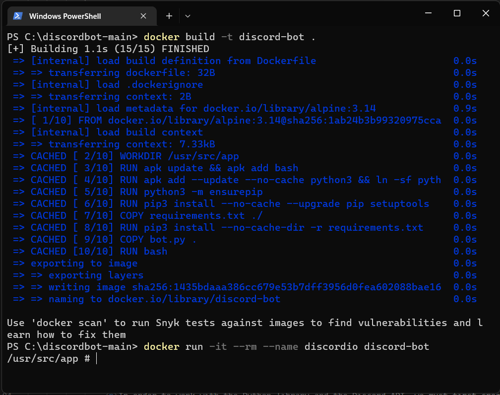
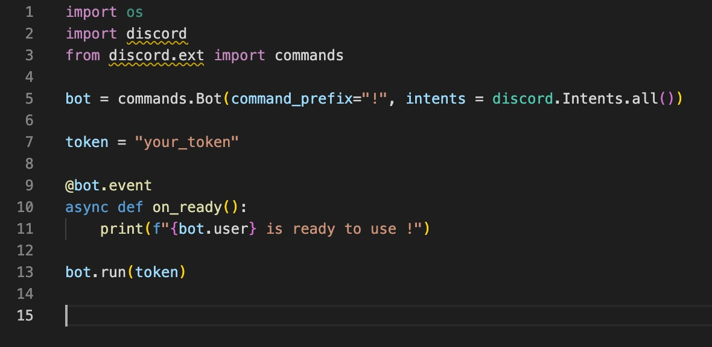

Hello, welcome to this tutorial to use during the presentation of the Techweek LaSalle Colllege Montreal.
Next we will present the information to prepare our bot in Discord.
Let's start!
We are going to use Docker as a Runing Envarioment, this makes it easy for us to run the Discord Bot in a universal development environment for Python 3.10 with all the necessary libraries for the correct operation.
To achieve this we need you to do the following prior to our presentation
Once you download and install Docker, the next step is to download the container image that we have prepared for an optimal development environment for this moment.
You can find the image of Docker in the follow repository. (https://github.com/esquerg/discordbot)
You can place the downloaded image in your preferred location, however we recommend that it be the root of the C:\ since we are going to execute a series of commands from the command line to run our container.
Open your Docker App and leave it there while you run the following commands in the shell
Execute the Command by pressing the Windows key + r, then we run cmd
Go to the dirrectory where you put your Docker container discordbot-main
Finally you need these two commands to get your Docker up and running.
docker build -t discord-bot .
docker run -it --rm --name discordio discord-bot
In your first step it will look like this.
In your last step it will look like this.
Finally in your Docker App you will see that the container is running.
If you have already reached this point, everything is ready for us to see each other at Techweek, if you have not achieved it, do not worry, we will briefly repeat the steps and you can also support us during the workshop.
From this moment on, these instructions are for reference to guide you during our talk at TechWeek 2022, each of these steps will be shared live.
In order to work with the Python library and the Discord API, we must first create a Discord Bot account. Here are the step to creating a Discord Bot account.
This token is your bot's password so don't share it with anybody. It could allow someone to log in to your bot and do anything he wants.
You can regenerate the token anytime
Now you have to get your Bot User into a server. To do this, you should create an invite URL for it. Go to the OAuth2 tab. Then select bot under the scopessection. Now choose the permissions you want for the bot. Our bot is going to mainly use text messages so we don't need a lot of the permissions. You may need more depending on what you want your bot to do.
After selecting the appropriate permissions, click the copy button above the permissions. That will copy a URL which can be used to add the bot to a server.
Paste the URL into your browser, choose a server to invite the bot to, and click “Authorize”. To add the bot, your account needs Manage Server permissions.
Now that you've created the bot user, we'll start writing the Python code for the bot.
discord.py revolves around the concept of events. An event is something you listen to and then respond to. For example, when a message happens, you will receive an event about it that you can respond to.>
Let’s make a bot that replies to a specific message. This simple bot code, along with the code explanation, is taken from the discord.py documentation. We will be adding more features to the bot later.
Add this code to main.py. (You can name the file something else if you like, just not discord.py.) I'll explain what all this code does shortly.
When you created your bot user on Discord, you copied a token. Now we are going to create a .env file to store the token. If you are running your code locally, you don't need the .env file. Just replace os.getenv('TOKEN') with the token. .env files are used for declaring environment variables.
“Now let's go over what each line of code is doing in your Discord bot code.”